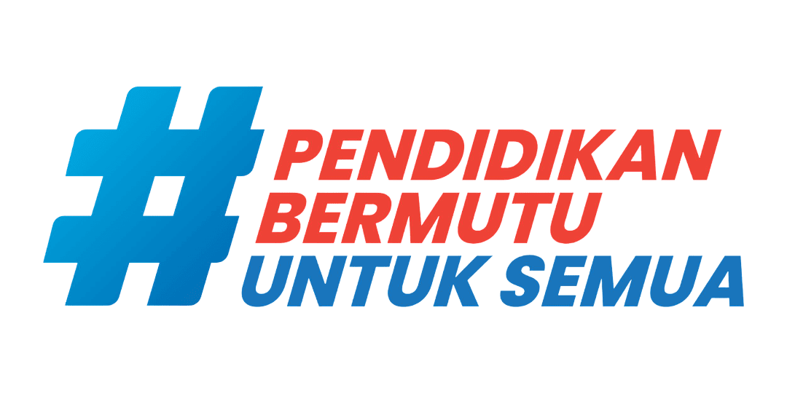

📚 BUKU SAKU DIGITAL 📚
✨ Kelas 6 SD - Portfolio Keren ✨
🏫 SD Negeri 1 Ploso Nganjuk
✨ “Belajar Ceria Bersama Teknologi” ✨


IPA
Ilmu Pengetahuan Alam
⭐ 3 Bab Seru ⭐
MATEMATIKA
Matematika Asyik!
⭐ 3 Bab Seru ⭐
B. INDONESIA
Bahasa Indonesia
⭐ 3 Bab Seru ⭐
🌿 PILIH BAB PELAJARAN IPA 🌿
🌱 BAB 1: FOTOSINTESIS
Proses tumbuhan membuat makanan sendiri
🐠 BAB 2: SIMBIOSIS
Hubungan timbal balik antar makhluk hidup
🦁 BAB 3: RANTAI MAKANAN
Perpindahan energi dari mangsa ke pemangsa
🌿 FOTOSINTESIS 🌿
📝 RINGKASAN MATERI
Fotosintesis adalah proses tumbuhan mengubah cahaya matahari menjadi makanan.
✅ Bahan yang dibutuhkan:
- 💧 Air (dari akar)
- ☀️ Cahaya Matahari
- 🍃 Karbon Dioksida (CO₂)
- 🌿 Klorofil (zat hijau daun)
🎁 Hasil Fotosintesis:
- 🍚 Glukosa (makanan tumbuhan)
- 💨 Oksigen (O₂) - untuk kita bernafas!
💡 Tahukah kamu? Tumbuhan adalah satu-satunya makhluk hidup yang bisa membuat makanan sendiri!
🐠 SIMBIOSIS 🐠
📝 RINGKASAN MATERI
Simbiosis adalah hubungan erat antara dua makhluk hidup yang berbeda jenis.
🔹 Jenis-jenis Simbiosis:
- 🤝 Mutualisme: Keduanya untung. Contoh: Lebah 🐝 dan Bunga 🌸
- 😐 Komensalisme: Satu untung, satu tidak rugi. Contoh: Ikan Remora 🐟 dan Hiu 🦈
- 😠 Parasitisme: Satu untung, satu rugi. Contoh: Nyamuk 🦟 dan Manusia 🧑
🦁 RANTAI MAKANAN 🦁
📝 RINGKASAN MATERI
Rantai Makanan adalah urutan perpindahan energi makanan dari sumber tumbuhan ke hewan pemangsa.
🔄 Urutan dalam Rantai Makanan:
- 🌱 Produsen: Tumbuhan (penghasil makanan)
- 🐭 Konsumen I: Hewan pemakan tumbuhan (Herbivora)
- 🐍 Konsumen II: Hewan pemakan daging (Karnivora)
- 🦅 Konsumen Puncak: Pemangsa teratas
- 🍄 Pengurai: Bakteri & Jamur (menguraikan bangkai)
Contoh: Padi 🌾 → Tikus 🐭 → Ular 🐍 → Elang 🦅
📐 PILIH BAB PELAJARAN MATEMATIKA 📐
🔢 BAB 1: PECAHAN
Mengenal bagian dari keseluruhan
🔷 BAB 2: BANGUN DATAR
Mengenal bentuk dan luas bidang
⏱️ BAB 3: KECEPATAN & DEBIT
Hubungan jarak, waktu, dan volume
🔢 PECAHAN 🔢
📝 RINGKASAN MATERI
Pecahan adalah bilangan yang menyatakan bagian dari keseluruhan.
Contoh: ½ (setengah)
- 🔵 Angka atas = Pembilang (bagian yang diambil)
- 🔴 Angka bawah = Penyebut (jumlah seluruh bagian)
🍕 Ilustrasi Pizza: 1 pizza dipotong 4 → 1 potong = ¼
🔷 BANGUN DATAR 🔷
📝 RINGKASAN MATERI
Bangun Datar adalah bangun yang hanya memiliki panjang dan lebar (2 Dimensi).
📐 Macam-macam Bangun Datar:
- ⬛ Persegi: 4 sisi sama panjang
- 📏 Persegi Panjang: Sisi berhadapan sama panjang
- 🔺 Segitiga: Memiliki 3 sisi
- ⚪ Lingkaran: Tidak memiliki sudut
⏱️ KECEPATAN & DEBIT ⏱️
📝 RINGKASAN MATERI
Rumus Jitu (Segitiga Jokowi):
Jarak = Kecepatan × Waktu
🚗 Contoh Soal: Mobil melaju 60 km/jam selama 2 jam. Jarak = 60 × 2 = 120 km.
📖 PILIH BAB PELAJARAN BAHASA INDONESIA 📖
📄 BAB 1: TEKS EKSPLANASI
Teks yang menjelaskan proses "mengapa" dan "bagaimana"
🎭 BAB 2: PUISI
Ungkapan perasaan dengan kata indah
🎤 BAB 3: PIDATO
Berbicara di depan umum
📄 TEKS EKSPLANASI 📄
📝 RINGKASAN MATERI
Teks Eksplanasi adalah teks yang menjelaskan proses terjadinya suatu fenomena alam atau sosial.
🏗️ Struktur Teks Eksplanasi:
- 1️⃣ Pernyataan Umum (Pembuka)
- 2️⃣ Deretan Penjelas (Isi / Proses)
- 3️⃣ Interpretasi (Kesimpulan)
🌋 Contoh Judul: "Proses Terjadinya Hujan", "Mengapa Gunung Meletus?"
🎭 PUISI 🎭
📝 RINGKASAN MATERI
Puisi adalah karya sastra yang terikat oleh rima, irama, dan bait.
🎨 Unsur Puisi:
- Diksi: Pemilihan kata yang indah
- Rima: Persamaan bunyi di akhir baris
- Majas: Gaya bahasa (Personifikasi, Metafora)
"Aku ingin mencintaimu dengan sederhana..." - Chairil Anwar
🎤 PIDATO 🎤
📝 RINGKASAN MATERI
Pidato adalah kegiatan berbicara di depan umum untuk menyampaikan pendapat atau gagasan.
📋 Kerangka Pidato:
- 🙏 Pembuka: Salam, Sapaan, Syukur
- 💬 Isi: Maksud dan Tujuan Pidato
- 👋 Penutup: Kesimpulan, Permohonan Maaf, Salam